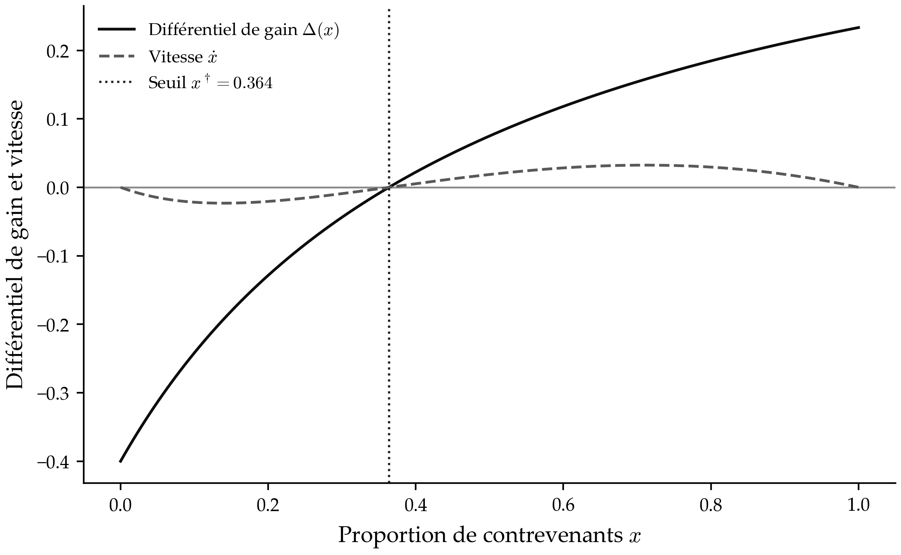
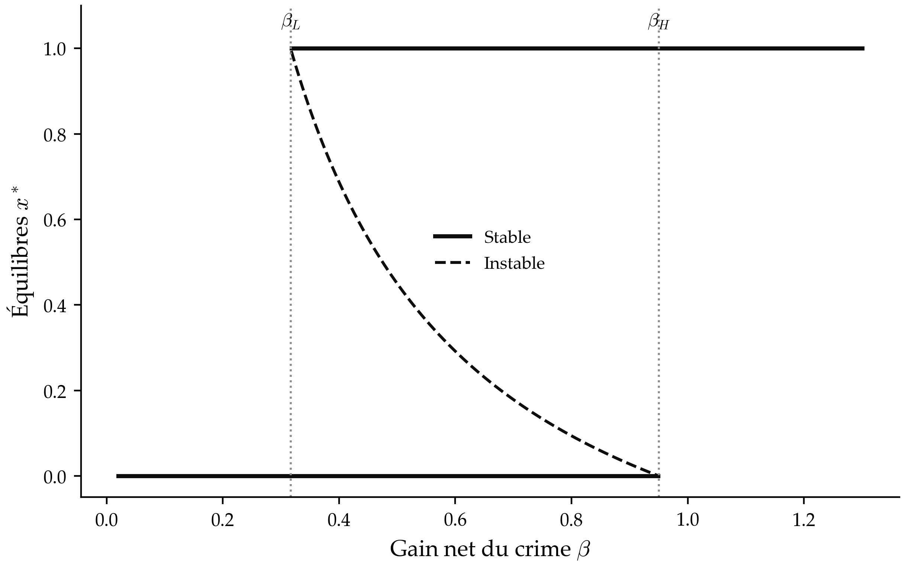
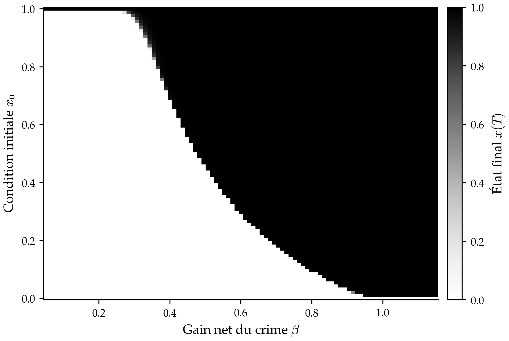
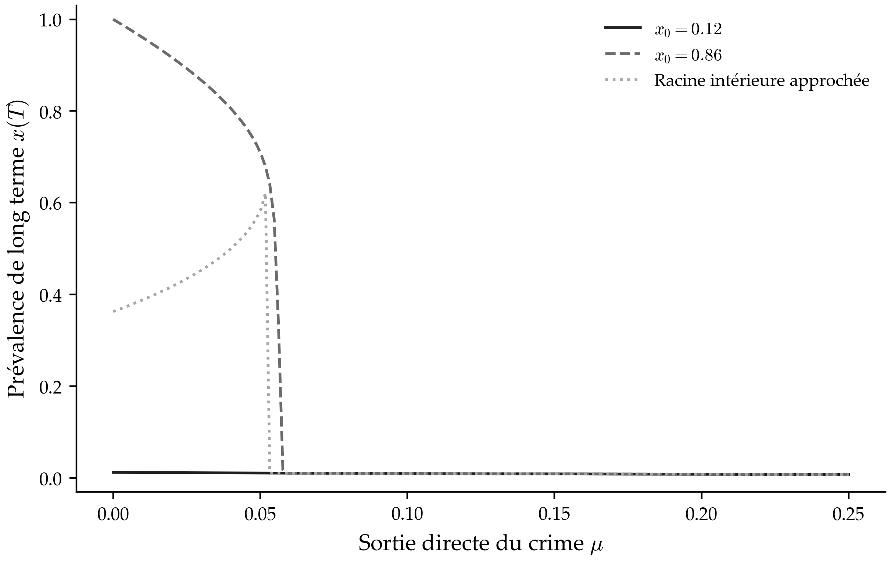
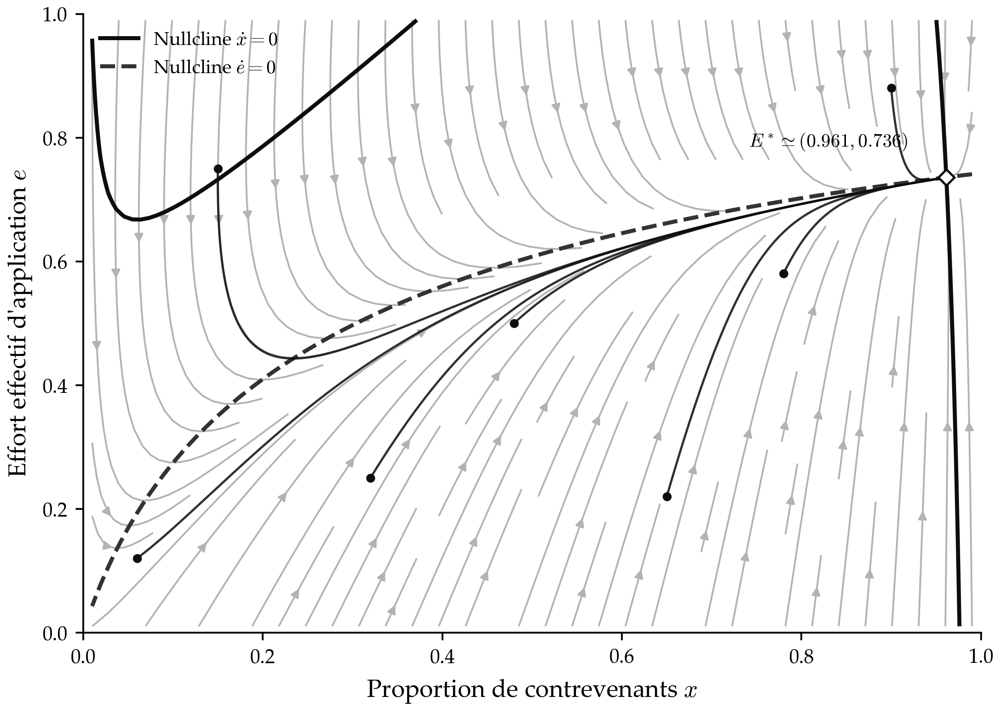
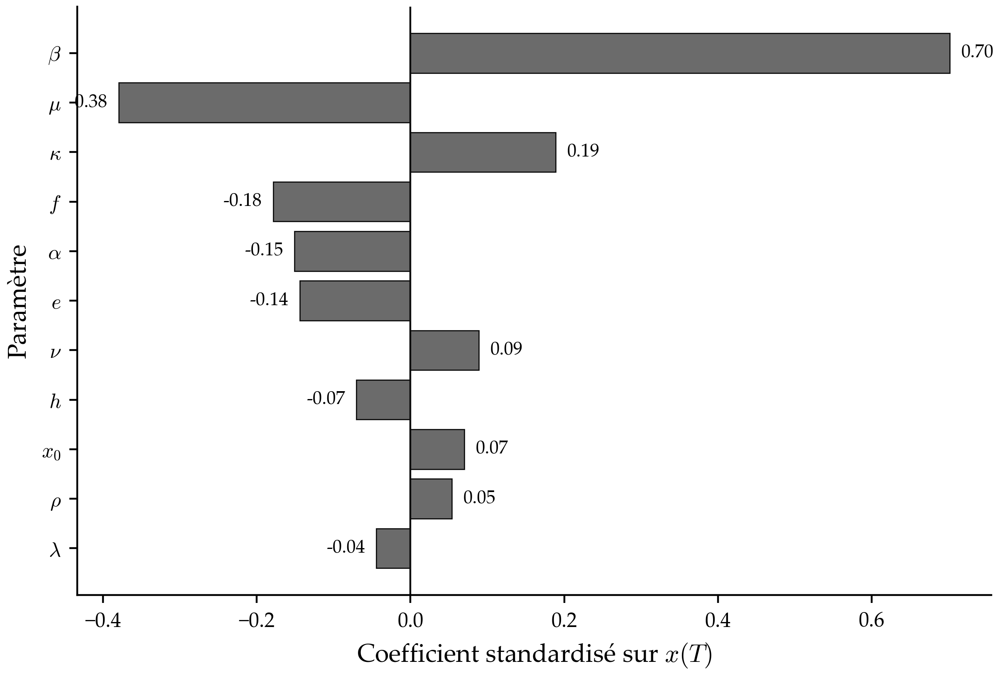
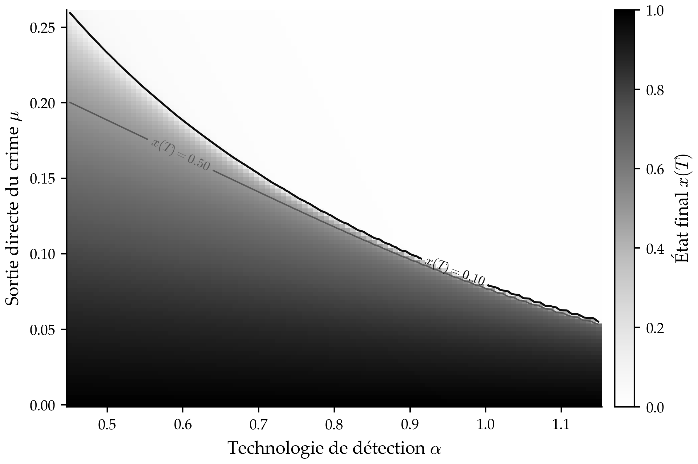

AFED — Association Française de l'Économie de Droit
11ème conférence annuelle
Jeu Évolutionnaire
et Application
de la Loi
C73K14K42D83H56
Jeux évolutionnaires · Dynamique du réplicateur · Congestion institutionnelle · Réhabilitation · Bassins d'attraction
Ramanambonona A.— Jeu Évolutionnaire et Application de la Loi
AFED · 2026
Motivation
Au-delà de Becker (1968) : que se passe-t-il
quand le crime devient fréquent ?
Paradigme canonique
Infraction = gain privé vs sanction attendue
Leviers : probabilité $p$, sévérité $f$, coût public $c$
Becker 1968 · Stigler 1970 · Polinsky–Shavell 2000, 2007
Leviers : probabilité $p$, sévérité $f$, coût public $c$
Becker 1968 · Stigler 1970 · Polinsky–Shavell 2000, 2007
Analyse statique
Choix optimal $(p,f)$ pour un agent représentatif — hors dynamique de population et d'imitation collective
Lacune centrale
La probabilité effective de détection se dégrade quand les infractions se multiplient — la congestion institutionnelle est ignorée
Effets de réseau absents
Externalités d'imitation, normes sociales, réhabilitation comme flux comportemental — hors du cadre standard
Question de recherche
« Comment la congestion, les externalités de réseau et la réhabilitation modifient-ils l'efficacité dynamique de l'application de la loi ? »
Notre apport — Détection congestionnée
$$q(x,e)=\frac{\alpha\,e}{1+\kappa\,x}$$
Ramanambonona A.— Jeu Évolutionnaire et Application de la LoiAFED · 2026
Figure 1 du manuscrit — Seuil et dynamique
Différentiel de gain $\Delta(x)$ et vitesse de diffusion $\dot{x}$

La dynamique du réplicateur change de signe au seuil instable $x^\dagger\simeq0{,}364$. En deçà, la prévalence diminue ; au-delà, elle augmente (modèle de base sans flux).
Ramanambonona A.— Jeu Évolutionnaire et Application de la LoiAFED · 2026
Positionnement
Trois courants, une synthèse
Économie du droit
(dissuasion)
(dissuasion)
Becker (1968),
Polinsky–Shavell (2000, 2007)
Garoupa (1997, 2001)
Kaplow (1992)
→ Arbitrage $p\!\times\!f$ · Sanction optimale
Polinsky–Shavell (2000, 2007)
Garoupa (1997, 2001)
Kaplow (1992)
→ Arbitrage $p\!\times\!f$ · Sanction optimale
Jeux évolutionnaires
Maynard Smith–Price (1973)
Taylor–Jonker (1978)
Friedman (1991)
Hofbauer–Sigmund (2003)
Hofbauer–Sandholm (2009)
→ Réplicateur · ESS · Bassins d'attraction
Taylor–Jonker (1978)
Friedman (1991)
Hofbauer–Sigmund (2003)
Hofbauer–Sandholm (2009)
→ Réplicateur · ESS · Bassins d'attraction
Criminalité évolutionnaire
Short et al. (2010)
McBride et al. (2016)
Berenji et al. (2014)
Perc–Szolnoki (2015)
Espejo (2016)
→ Adversarial · Récidive · Inspection
McBride et al. (2016)
Berenji et al. (2014)
Perc–Szolnoki (2015)
Espejo (2016)
→ Adversarial · Récidive · Inspection
Lacune ciblée
Les modèles existants ignorent la congestion de la détection effective dans un cadre unifié intégrant dissuasion, externalités de réseau, réhabilitation et effort endogène.
Notre apport
$q(x,e)=\dfrac{\alpha e}{1+\kappa x}$
Ramanambonona A.— Jeu Évolutionnaire et Application de la LoiAFED · 2026
Architecture du modèle
Population, détection congestionnée et gain relatif
Population normalisée à 1
$x(t)$
Criminels (C)
+
$1{-}x(t)$
Honnêtes (H)
$=\;1$
Éq. (1) — Probabilité effective de détection
$$q(x,e)=\frac{\alpha\,e}{1+\kappa\,x}$$
$\alpha>0$ — technologie de détection
Capacité intrinsèque : équipements, traçabilité, formation
$e\in[0,1]$ — effort d'application
Exogène $\bar e$ dans le modèle de base · Endogène $\dot e$ dans l'extension
$\kappa\geq 0$ — congestion institutionnelle
Saturation des juridictions, délais, filtrage administratif
Éq. (2) — Différentiel de gain $\Delta$
$$\Delta(x,e)=\underbrace{\beta+\rho x}_{\text{gain brut}} - f\underbrace{\frac{\alpha e}{1+\kappa x}}_{\text{sanction attendue}} - \underbrace{\lambda h}_{\text{réhabilitation}}$$
$\rho x$ — externalité de réseau
Prévalence élevée réduit la stigmatisation, facilite l'apprentissage illicite
$\lambda h$ — réhabilitation sur le gain
Alternatives licites, emploi, soutien social — réduit l'attractivité relative du crime
$\beta$ — gain net individuel
Bénéfice privé de l'infraction net des coûts non pénaux — paramètre dominant dans les simulations
Ramanambonona A.— Jeu Évolutionnaire et Application de la LoiAFED · 2026
Formalisation
Dynamique réplicateur-mutateur
Éq. (3) — Dynamique centrale
$$\dot{x}=\underbrace{x(1-x)\,\Delta(x,e)}_{\text{réplicateur}} - \underbrace{\mu\,x}_{\text{sortie}} + \underbrace{\nu(1-x)}_{\text{entrée}}$$
$x(1-x)\Delta$ : composante réplicatrice
Si $\Delta>0$ : le crime se diffuse par imitation. Si $\Delta<0$ : la conformité l'emporte. Révision comportementale adaptative.
$-\mu x$ : flux direct de sortie
Réhabilitation, désistance, réinsertion. Empêche $x=1$ d'être un état absorbant.
$+\nu(1-x)$ : flux d'entrée (mutation)
Nouvelles infractions, recrutement. Empêche $x=0$ d'être absorbant.
Proposition 1 — Invariance du domaine
$[0,1]$ positivement invariant pour $\dot x$ · $[0,1]^2$ pour $(\dot x,\dot e)$
Preuve : $\dot x|_{x=0}=\nu\geq0$ ; $\dot x|_{x=1}=-\mu\leq0$ ; idem pour $e$. ∎
Preuve : $\dot x|_{x=0}=\nu\geq0$ ; $\dot x|_{x=1}=-\mu\leq0$ ; idem pour $e$. ∎
Éq. (4) — Effort d'application endogène
$$\dot{e}=\underbrace{\eta\,x\,(1-e)}_{\text{réaction autorité}} - \underbrace{\omega\,e - \chi\,e^2}_{\text{coûts}}$$
Interprétation des paramètres d'effort
$\eta$ : réactivité de l'autorité
Vitesse de réponse à la hausse de criminalité
$\omega$ : dépréciation de l'effort
Fatigue institutionnelle, rotation du personnel
$\chi$ : coût convexe de l'effort
Rendements décroissants des ressources institutionnelles
Ramanambonona A.— Jeu Évolutionnaire et Application de la LoiAFED · 2026
Schéma conceptuel — Flux entre stratégies
Structure des flux entre stratégies C et H
Ramanambonona A.— Jeu Évolutionnaire et Application de la LoiAFED · 2026
Résultat central
Bistabilité et seuil critique $x^\dagger$
Proposition 2 — Seuil critique et bistabilité
Posons $\;\beta_L=\dfrac{\alpha\bar e f}{1+\kappa}\;$ et $\;\beta_H=\alpha\bar e f$
Conformité
$\beta < \beta_L$
$x=0$ globalement attractif
Bistabilité
$\beta_L < \beta < \beta_H$
$x^\dagger$ instable
$x=0$ et $x=1$ attractifs
$x=0$ et $x=1$ attractifs
Criminalité
$\beta > \beta_H$
$x=1$ globalement attractif
Seuil intérieur instable
$$x^\dagger = \frac{1}{\kappa}\!\left(\frac{\alpha\bar e f}{\beta}-1\right)\in(0,1)$$
Dépendance à la condition initiale
Si $x_0 < x^\dagger$ → conformité globale. Si $x_0 > x^\dagger$ → criminalité persistante.
L'histoire initiale détermine l'attracteur final — hystérèse dynamique.
L'histoire initiale détermine l'attracteur final — hystérèse dynamique.
Proposition 3 — Statique comparative
$$\frac{\partial x^\dagger}{\partial\alpha}>0,\;\frac{\partial x^\dagger}{\partial\bar e}>0,\;\frac{\partial x^\dagger}{\partial f}>0$$
$$\frac{\partial x^\dagger}{\partial\beta}<0,\;\frac{\partial x^\dagger}{\partial\kappa}<0$$
Preuve : dérivées partielles de $x^\dagger=\tfrac{1}{\kappa}\!\left(\tfrac{\alpha\bar e f}{\beta}-1\right)$ ∎
$\alpha,\bar e,f$ : élargissent le bassin de conformité
Un $x^\dagger$ plus élevé tolère une prévalence initiale plus grande sans basculement
$f\uparrow$ peut être neutralisé par $\kappa\uparrow$
Augmenter les peines sans renforcer les capacités de traitement = zéro effet dynamique
Ramanambonona A.— Jeu Évolutionnaire et Application de la LoiAFED · 2026
Figure 3 du manuscrit — Bifurcation
Équilibres selon le gain net $\beta$ — branches stables et instable

Entre $\beta_L=0{,}317$ et $\beta_H=0{,}950$, deux attracteurs coexistent ; la branche en pointillés matérialise le seuil instable $x^\dagger$.
Ramanambonona A.— Jeu Évolutionnaire et Application de la LoiAFED · 2026
Figure 4 du manuscrit — Bassins d'attraction
Condition initiale $x_0$, gain net $\beta$ et état final $x(T)$

Les zones sombres correspondent à une prévalence finale proche de 1, les zones claires à une prévalence finale proche de 0 ; la frontière dépend de $x_0$ et de $\beta$.
Ramanambonona A.— Jeu Évolutionnaire et Application de la LoiAFED · 2026
Réhabilitation
Réhabilitation : deux canaux distincts
Proposition 4 — Effet local de la réhabilitation
À l'équilibre intérieur stable $x^*\in(0,1)$ :
$$\frac{\partial x^*}{\partial\mu}<0,\qquad\frac{\partial x^*}{\partial\nu}>0,\qquad\frac{\partial x^*}{\partial h}<0$$
TFI : $\partial x^*/\partial z = -F_z/F_x$ ; $F_x < 0$ à l'équilibre stable ∎
Canal 1 - Flux direct $\mu$
Agit sur la masse déjà engagée dans le crime. Peut supprimer le bassin supérieur en transformant la structure des racines de $F$.
Canal 2 — Gain relatif $\lambda h$
Réduit l'attractivité du crime ($\Delta\downarrow$). Déplace le seuil structurel $x^\dagger$ vers le haut sans modifier le flux de masse.
Contre-force — Flux d'entrée $\nu$
Alimentent la stratégie illicite en continu. Un programme sans contrôle de $\nu$ peut être insuffisant en régime de récidive.
Synthèse des deux canaux
Sanction $f$ : agit sur le différentiel d'incitation $\Delta$
Désistance $\mu$ : modifie la masse dynamique exposée à la récidive
Attractivité $h$ : déplace le seuil structurel $x^\dagger$
Désistance $\mu$ : modifie la masse dynamique exposée à la récidive
Attractivité $h$ : déplace le seuil structurel $x^\dagger$
Implication pour la politique
La réhabilitation est complémentaire à la dissuasion, non opposée. Elle est particulièrement utile dans les régimes de criminalité persistante où la sanction seule ne suffit pas à ramener le système dans le bassin de conformité.
Ramanambonona A.— Jeu Évolutionnaire et Application de la LoiAFED · 2026
Figure 5 du manuscrit — Réhabilitation
Prévalence de long terme $x(T)$ selon la sortie directe $\mu$

Les conditions initiales $x_0=0{,}12$ et $x_0=0{,}86$ conduisent à des régimes différents pour une faible désistance. Lorsque $\mu$ augmente, le régime de forte prévalence disparaît.
Ramanambonona A.— Jeu Évolutionnaire et Application de la LoiAFED · 2026
Extension dynamique
Effort endogène et retard institutionnel
Système coévolutionnaire $(x,e)$
$$\dot x=F(x,e)=x(1-x)\Delta-\mu x+\nu(1-x)$$
$$\dot e=G(x,e)=\eta x(1-e)-\omega e-\chi e^2$$
Proposition 5 — Stabilité locale (Routh–Hurwitz)
$(x^*,e^*)$ localement stable si :
$$\operatorname{tr}J=F_x+G_e<0,\quad\det J=F_xG_e-F_eG_x>0$$
Signes structurels : $F_e<0$ · $G_x>0$ · $G_e<0$ ∎
Calibration numérique
$E^*\approx(0.961,\;0.736)$ · valeurs propres $\approx -0.366$ et $-1.647$ · stabilité locale confirmée
Le paradoxe du retard institutionnel
$e^*=0.736$ mais $1{+}\kappa x^*\approx 2.92$ → $q(E^*)\approx 0.239$ seulement : l'effort ne se traduit pas en détection effective dans un système saturé
Paradoxe central
Une politique d'effort purement réactive à la criminalité peut stabiliser un régime de forte prévalence : $e^*=0.736$ mais $q(E^*)\approx 24\%$.
La congestion $\kappa$ absorbe l'effort sans améliorer la dissuasion effective.
La congestion $\kappa$ absorbe l'effort sans améliorer la dissuasion effective.
Conséquence politique
Réduire $\kappa$ (capacité institutionnelle) est un multiplicateur de l'effort $e$ : $\partial q/\partial\kappa = -\alpha e/(1+\kappa x)^2 < 0$
Ramanambonona A.— Jeu Évolutionnaire et Application de la LoiAFED · 2026
Figure 2 du manuscrit — Diagramme de phase
Champ de trajectoires et nullclines du système $(x,e)$

Le diagramme montre les nullclines $\dot{x}=0$ et $\dot{e}=0$, ainsi que les trajectoires convergeant vers $E^*\simeq(0{,}961;0{,}736)$ pour la calibration étudiée.
Ramanambonona A.— Jeu Évolutionnaire et Application de la LoiAFED · 2026
Figure 6 du manuscrit — Sensibilité globale
Coefficients standardisés sur $x(T)$ — 2 500 tirages Monte-Carlo

Le gain net $\beta$ présente le coefficient positif dominant (environ $+0{,}70$), tandis que la désistance $\mu$ constitue le principal effet négatif (environ $-0{,}38$). Tous les 11 paramètres de l’analyse sont représentés.
Ramanambonona A.— Jeu Évolutionnaire et Application de la LoiAFED · 2026
Figure 7 du manuscrit — Frontière de politique
Iso-courbes de prévalence finale $x(T)$ selon $\alpha$ et $\mu$

Les iso-courbes $x(T)=0{,}10$ et $x(T)=0{,}50$ montrent la substitution possible entre capacité de détection et sortie directe du crime à prévalence finale donnée.
Ramanambonona A.— Jeu Évolutionnaire et Application de la LoiAFED · 2026
Discussion et conclusion
De l'arbitrage $p{\times}f$ à une économie des bassins d'attraction
1. Rendement conditionnel de la sévérité
$f\uparrow$ efficace si la détection reste crédible · neutralisé par $\kappa\uparrow$ · une réforme pénale sans capacités de traitement peut être sans effet dynamique
2. Réhabilitation complémentaire, non opposée
Deux canaux distincts : $h$ (attractivité) et $\mu$ (désistance). Surtout utile en régime de persistance où la sanction seule ne ramène pas vers la conformité.
3. Contrainte institutionnelle du retard
Agir avant le franchissement du seuil $x^\dagger$ est décisif. Une politique réactive dans un système saturé stabilise un équilibre de forte prévalence.
Résultat central
« L'efficacité de l'application de la loi dépend de la position du système relativement au seuil $x^\dagger$, pas seulement du niveau légal des peines. »
Synthèse des propositions
| Prop.1 | Invariance de $[0,1]$ et $[0,1]^2$ | Admissibilité |
| Prop.2 | Bistabilité et seuil $x^\dagger$ | Central |
| Prop.3 | Statique comparative de $x^\dagger$ | Politique |
| Prop.4 | Effet de $\mu,\nu,h$ sur $x^*$ | Réhabilitation |
| Prop.5 | Stabilité Routh–Hurwitz $(x^*,e^*)$ | Effort endogène |
Perspectives empiriques
Estimer $\kappa$ via données judiciaires (délais, taux de poursuite)
Tester seuils et hystérèse sur données de police, justice, récidive
Extensions : hétérogénéité, spatiale, multi-stratégies, erreurs judiciaires
Ramanambonona A.— Jeu Évolutionnaire et Application de la LoiAFED · 2026
AFED · 2026
Merci de votre attention
Résultat central
« L'efficacité de l'application de la loi ne se réduit pas au choix de $(p,f)$, elle dépend de la position du système relativement au seuil $x^\dagger$ séparant les bassins d'attraction. »
ambinintsoa.uat.ead2@gmail.com
C73 · K14 · K42 · D83 · H56
Law and Economics
Ramanambonona A.— Jeu Évolutionnaire et Application de la Loi
AFED · 2026